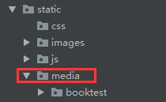
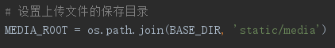

Django1.8.2中文文档：Django1.8.2中文文档
1)新建上传文件保存目录。

2)配置上传文件保存目录。

1.在static下面创建media文件夹(再在media文件夹里面新建booktest文件夹)。
2.设置静态文件保存目录
# 设置上传文件的保存目录
MEDIA_ROOT = os.path.join(BASE_DIR, 'static/media')3.编写图片模型类
class PicTest(models.Model):
"""上传图片"""
goods_pic = models.ImageField(upload_to='booktest') # 指定上传图片到media下面的booktest文件夹下4.迁移数据
python manage.py makemigrations
python manage.py migrate如果项目用的是原来的数据库，那么应该先去django_migrations里面删除booktest的init文件；
delete from django_migrations where id = xxx;如果数据库中原来存在areainfo表，然后项目中的模型类又申请创建，会报错，
解决方法是去booktets/migrations/001init下面删掉重复的表记录。
5.去admin中注册表
admin.site.register(models.PicTest)这时候，就可以在后台上传图片了。
request对象有一个FILES的属性，类似于字典，通过request.FILES可以获取上传文件的处理对象。
在django中，上传文件不大于2.5M,文件放在内存中。上传文件大于2.5M,文件内容写到一个临时文件中。
Django处理上传文件的两个类：
FILE_UPLOAD_HANDLERS= (
"django.core.files.uploadhandler.MemoryFileUploadHandler",
"django.core.files.uploadhandler.TemporaryFileUploadHandler")
上传图片html--upload_pic.html
<!DOCTYPE html>
<html lang="en">
<head>
<meta charset="UTF-8">
<title>上传图片</title>
<meta name="viewport" content="width=device-width, initial-scale=1">
</head>
<body>
<form action="/upload_handle/" method="post" enctype="multipart/form-data">
{% csrf_token %}
<input type="file" name="pic"><br>
<input type="submit" value="上传图片">
</form>
</body>
</html>上传图片对应函数
from django.conf import settings # 上传图片时使用
def upload_pic(request):
"""返回上传图片文件的页面"""
return render(request, 'booktest/upload_pic.html')
def upload_handle(request):
"""对上传的文件进行处理"""
# 1.获取上传文件的处理对象
pic = request.FILES['pic']
pic_name = pic.name # 上传文件名
# pic.chunk() # 上传的文件会以迭代器的形式，一部分一部分的保存在这里面
# 2.创建一个文件
save_path = '%s/booktest/%s' % (settings.MEDIA_ROOT, pic_name)
# 3.将上传的文件写入到新创建的文件中
with open(save_path, 'wb') as f:
for content in pic.chunks():
f.write(content)
# 4.记录写入数据库
models.PicTest.objects.create(goods_pic='booktest/%s' % pic_name)
# 5.返回应答
return HttpResponse(pic_name)配套url
url(r'^upload_pic', views.upload_pic), # 返回上传图片文件的页面
url(r'^upload_handle', views.upload_handle), # 对上传的文件进行处理
需求
查询出所有省级地区的信息，显示在页面上。
1)查询出所有省级地区的信息。
2)按每页显示10条信息进行分页，默认显示第一页的信息，下面并显示出页码。
3)点击i页链接的时候，就显示第i页的省级地区信息。
url
url(r'^show_areas(?P<pindex>\d*)', views.show_areas), # 分页show_areas.html
<!DOCTYPE html>
<html lang="en">
<head>
<meta charset="UTF-8">
<title>分页</title>
<meta name="viewport" content="width=device-width, initial-scale=1">
</head>
<body>
<ul>
{% for area in page %}
<li>{{ area.atitle }}</li>
{% endfor %}
</ul>
{% if page.has_previous %}
<a href="/show_areas{{ page.previous_page_number }}"><上一页</a>
{% endif %}
{% for pindex in page.paginator.page_range %}
{% if pindex == page.number %}
{{ pindex }}
{% else %}
<a href="/show_areas{{ pindex }}">{{ pindex }}</a>
{% endif %}
{% endfor %}
{% if page.has_next %}
<a href="/show_areas{{ page.next_page_number }}">下一页></a>
{% endif %}
</body>
</html>分页对应函数
from django.core.paginator import Paginator
def show_areas(request, pindex):
"""分页"""
# 1.查询出所有省级地区的信息
areas = models.AreaInfo.objects.filter(aParent__isnull=True)
# 2.分页，每页显示10条
pagintor = Paginator(areas, 10)
# 3.获取第pindex页的内容
if pindex == "":
# 默认取第一页的内容
pindex = 1
else:
pindex = int(pindex)
# page是Page类的实例对象
page = pagintor.page(pindex)
# 4.使用模板
return render(request, 'booktest/show_areas.html', {'page': page})
需求
1)显示省地区信息。
2)省改变时在对应的下拉列表框中显示下级市的信息。
3)市改变时在对应的下拉列表框中显示下级县的信息。
对应函数
def areas(request):
return render(request, 'booktest/areas.html')
def prov(request):
"""返回省级数据"""
# 1.获取所有省级地区的信息
areas = models.AreaInfo.objects.filter(aParent__isnull=True)
# 2.变量areas拼接处json数据：atitle，id
areas_list = []
for area in areas:
areas_list.append((area.id, area.atitle))
return JsonResponse({'data': areas_list})
def city(request, pid):
"""获取pid对应地区的下级地区"""
# 1.获取pid对应地区的下级地区
# area = models.AreaInfo.objects.filter(id=pid)
# areas = area.areainfo_set.all()
areas = models.AreaInfo.objects.filter(aParent__id=pid)
# 2.变量areas拼接处json数据：atitle，id
areas_list = []
for area in areas:
areas_list.append((area.id, area.atitle))
return JsonResponse({'data': areas_list})url
url(r'^prov', views.prov), # 返回省级数据
url(r'^city(\d+)', views.city), # 返回市级数据
url(r'^dis(\d+)', views.city), # 返回县级数据area.html
<!DOCTYPE html>
<html lang="en">
<head>
<meta charset="UTF-8">
<title>省市县案例</title>
<meta name="viewport" content="width=device-width, initial-scale=1">
<script src="/static/js/jquery-3.3.1.js"></script>
<script>
$(function () {
// 发起一个ajax请求/prov, 获取所有省级地区的信息
// 获取信息，使用get；涉及到信息修改，使用post
$.get('/prov', function (data) {
// 回调函数
// 获取返回的json数据
let res = data.data;
// 获取prov下拉列表框
let prov = $('#prov');
// 遍历res数组，获取每一个元素: [地区id，地区标题]
for(let i=0; i<res.length; i++) {
let id = res[i][0];
let atitle = res[i][1];
let option_str = "<option value='"+ id +"'>" + atitle + "</option>";
// 向prov下拉列表框中追加元素
prov.append(option_str)
}
});
// 绑定prov下拉框的change事件，获取省下面市的信息
$('#prov').change(function () {
let prov_id = $(this).val();
$.get('/city'+prov_id, function (data) {
let res = data.data;
let city = $('#city');
city.empty().append('<option>---请选择市---</option>');
let dis = $('#dis');
dis.empty().append('<option>---请选择县---</option>');
$.each(res, function (index, item) {
let id = item[0];
let atitle = item[1];
let option_str = "<option value='"+ id +"'>" + atitle + "</option>";
// 向city下拉列表框中追加元素
city.append(option_str)
})
})
});
// 绑定prov下拉框的change事件，获取省下面市的信息
$('#city').change(function () {
let city_id = $(this).val();
$.get('/dis'+city_id, function (data) {
let res = data.data;
let dis = $('#dis');
dis.empty().append('<option>---请选择县---</option>');
$.each(res, function (index, item) {
let id = item[0];
let atitle = item[1];
let option_str = "<option value='"+ id +"'>" + atitle + "</option>";
// 向city下拉列表框中追加元素
dis.append(option_str)
})
})
});
})
</script>
</head>
<body>
<select id="prov">
<option>---请选择省---</option>
</select>
<select id="city">
<option>---请选择市---</option>
</select>
<select id="dis">
<option>---请选择县---</option>
</select>
</body>
</html>